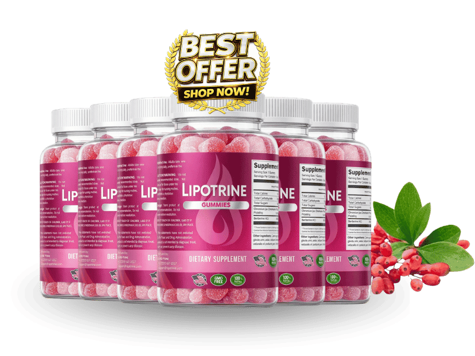

What Is Lipotrine And How Does It Work?
Everyone is chasing one hormone. That is the reason so many women eat less, feel proud of themselves, and still do not lose the weight.
The one hormone getting all the attention is GLP-1 — the satiety signal, the one that tells your brain you have had enough. It matters. But eating less is only half of a transaction, and the other half is entirely separate: something has to authorize your body to open the fat stores and spend what is in them. If that authorization never comes, restricting your intake just means your body lowers its spending to match. You are eating less and burning less, which is exactly what a stall feels like from the inside.
That authorization is the third signal — glucagon, the hormone that mobilizes stored fat. Almost nothing in this category addresses it.
Lipotrine is formulated around all three at once. The manufacturer calls it the Triple G approach: GLP-1 for satiety, GIP for metabolic handling, and Glucagon for releasing what is already stored. One gummy a day, no injections and no prescription.
There is a reason it is a gummy rather than a capsule. The pure gelatin base shields the active ingredients from stomach acid, favoring absorption further down where they can do something. The format is part of the mechanism, not a flavor decision.
For women over 35 moving through perimenopause, menopause, the post-partum years, or long-running metabolic stress, this is aimed at the part that changed — not at asking for more discipline from a body that stopped responding to it.
Lipotrine Ingredients
Five ingredients. Small list, and each one is load-bearing.
- Pure Gelatin (Glycine + Alanine): Both the delivery matrix and an active. The gelatin base shields the other ingredients from stomach acid, while glycine and alanine are amino acids described as supporting the cells that produce metabolic hormones. There is a second benefit here that women in particular notice: the collagen amino acids support skin firmness during weight loss — which addresses the quiet fear that losing the weight will just trade one problem for a looser-looking one.
- Okinawan Sea Salt (94+ trace minerals): Rich in magnesium, associated with healthy cortisol regulation. This is more relevant than it sounds. Cortisol is the stress hormone most directly tied to abdominal fat storage, and for women in hormonal transition — often while managing careers, aging parents, and disrupted sleep — chronically elevated cortisol is frequently the thing holding the whole pattern in place.
- EGCG (Green Tea Extract): A well-studied catechin with thermogenic properties, associated specifically with visceral fat oxidation — the deep abdominal fat that sits behind the muscle wall and ignores ordinary dieting.
- Gingerol (the active compound in ginger): Supports a healthy inflammatory response. Included because inflammation interferes with hormonal signaling, and a formula built on hormone signaling has to clear that interference to work.
- Berberine: The activator. Extensively studied for healthy glucose metabolism, fat oxidation and energy production, and the compound doing much of the heavy lifting on the metabolic side.
The design reads clearly: one ingredient delivering and protecting the rest while supporting skin, one on the stress hormone driving the storage, two on burning stored fat, one clearing the interference. It is 100% natural with no synthetic stimulants.
Lipotrine Side Effects
There is nothing in this gummy your body has not been working with all along.
Gelatin, sea salt, green tea, ginger, and a botanical compound found in several common plants. That is the entire label — naturally sourced compounds at supportive amounts, closer to a list of foods than to a pharmaceutical formula.
The absence worth naming: no synthetic stimulants. In this category that is the meaningful dividing line. Stimulant-based products create the jittery, racing-heart sensation that gets mistaken for the product working, followed by a crash and, for most people, an abandoned bottle. Lipotrine is not built that way, and users describe steady energy rather than a spike and drop.
That is reflected in the record. Across women taking Lipotrine as directed, there is no widespread pattern of adverse effects.
Manufacturing supports the rest. Lipotrine is produced in an FDA-registered facility under documented quality control. With a gummy, delivering consistent active content in every piece is the whole manufacturing problem — and that consistency is its own form of safety.
As with any dietary supplement, if you have an existing medical condition or take prescription medication, check with your healthcare professional before starting.
Lipotrine Dosage
One gummy, first thing in the morning, on an empty stomach before breakfast.
That is the whole protocol. Each bottle holds a 30-day supply, so a glance tells you whether you have kept up.
The timing is not arbitrary. Taken fasted, the gummy hits the least crowded conditions of the day, which gives the gelatin matrix the easiest job getting its actives through intact — and puts the hormonal signaling support in place before the first meal, which is when it has the most to do. Taking it mid-afternoon after eating works against the mechanism you paid for.
Consistency is worth more than any adjustment to the dose. Hormonal signaling support is cumulative and holds only under steady input. A week on and a week off does not deliver a slower version of the result — it delivers nothing, and then the honest conclusion is impossible to reach, because the product never actually ran.
Being a gummy taken before breakfast, it attaches easily to something you already do. That is not a minor point. The protocol that works is the one that survives a bad month.
Multi-bottle options on the official site cover a longer stretch without a monthly reorder and come out cheaper per bottle. Everything is a one-time purchase, with no subscription and no recurring charge.
Do not exceed one gummy daily.
Lipotrine – Refund Policy
A 60-day, 100% money-back guarantee covers every order.
Sixty days comfortably outlasts the point where you would know. Cravings and energy report back inside a few weeks; the scale takes longer, but you will have a clear read well before the window closes. A company that gives you the full answer before the deadline is not relying on the deadline.
Full terms and conditions are published on the official website.
Lipotrine Customer Reviews
 Sandra Kilpatrick
Savannah, GA
Verified Purchase – 6 Bottles
Sandra Kilpatrick
Savannah, GA
Verified Purchase – 6 Bottles
"Perimenopause hit me like a truck at 47. Same food, same walking routine, and my body just started keeping everything. My doctor said it was normal, which is true and also not helpful. Five months on Lipotrine and it's down twelve pounds, but the thing I did not expect was my skin. I'd been afraid losing weight at this age would just leave me looking deflated. It didn't."
 Barbara Whitfield
Scottsdale, AZ
Verified Purchase – 6 Bottles
Barbara Whitfield
Scottsdale, AZ
Verified Purchase – 6 Bottles
"I lost my mother last year and gained eighteen pounds around my middle while barely eating. I knew intellectually it was stress, but knowing that changes nothing. What shifted for me around week six was sleep — I stopped waking at 3 a.m. with my heart going. The weight started moving after that, not before. I think the order mattered."
 Linda Ramirez
Sacramento, CA
Verified Purchase – 3 Bottles
Linda Ramirez
Sacramento, CA
Verified Purchase – 3 Bottles
"I'd looked into the injections. I priced them out, read the forums, and decided I wasn't ready for a needle and a monthly bill that size. A gummy in the morning felt like something I could actually keep doing, and that turned out to be true — three months and I haven't missed a day. Seven pounds and the constant thinking about food has quieted down a lot."
Lipotrine – Where To Buy
Before ordering, there is something worth knowing about where you buy it.
Lipotrine is not sold through Amazon, eBay, or Walmart. Similar-looking bottles do surface on those platforms. With a gelatin-based gummy, heat is a genuine problem — it degrades the actives and compromises the matrix that is supposed to protect them through the stomach. A bottle that sat in an unconditioned warehouse can be authentic and still not do what it is meant to do.
A guarantee needs an order behind it, and only the official site creates one. Customer support works off the same records. Buy elsewhere and you are outside the system entirely: no order to reference, no refund to process, nobody on the other end of the email.
Going direct is what holds it together — fresh product with the matrix intact, made to the stated standards, and a refund you can actually claim.
Before completing a purchase, confirm you are on the official Lipotrine website.
To ensure you're getting the authentic product, most users choose to visit the official website directly.
Is Lipotrine A Scam?
No — and what settles it is that the product is harder to explain than it needed to be.
A scam does not build its pitch around three hormones. It picks the one people have heard of, promises a number of pounds, and stops. Explaining GLP-1, GIP and glucagon — and why addressing satiety without addressing the third signal leaves the job half done — is a more demanding argument that converts worse. You only make it if the mechanism is genuinely the reason you built the product this way.
The rest is consistent with that. Five named ingredients rather than a proprietary blend concealing the amounts. Manufacturing in an FDA-registered facility. No synthetic stimulants in a category that runs on them. A single purchase with no auto-shipping buried in the checkout. A 60-day money-back guarantee.
Where it stops being the answer. Hormonal weight gain has real underlying causes that deserve proper attention, and a botanical formula supporting metabolic signaling reaches some of them and not others. If your situation warrants a workup, go get one — that matters more than any gummy.
But if you are doing everything you did at 35 and watching your body ignore all of it — eating less than the people around you, sleeping badly, carrying it all in the middle where it never used to go — then the maths is simple. One gummy each morning, sixty guaranteed days. If nothing shifts, you claim the guarantee and the only cost was the waiting.
As with any dietary supplement, check with a healthcare professional before starting if you have an existing condition or take prescription medication.
For those who want to verify product details or check current availability, the official Lipotrine website remains the safest and most reliable option.
